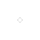

就算是再相同的一天，换一扇窗看出去，都是一个不同的世界，从现在起，打开应用中心，发现更大世界。
版本:1.0 Beta3 | 大小:5.7M | 更新:2016-11-09


不知道该做些什么的时候，让崭新的发现功能为你找真爱，每天发现不同的六个网站，虽然很少，但是很好。
版本:1.0 Beta3 | 大小:5.7M | 更新:2016-11-09


千寻想要的设计不是迎合潮流，也不是炫技雕饰，点到为止、干净用心才是最适合上网的设计，上善若水，大巧不工。
版本:1.0 Beta3 | 大小:5.7M | 更新:2016-11-09


能不动就不动的慵懒日子一点也不遥远，在千寻你就做得到，打开几十个网页，看看连续关闭它们有多省事。
版本:1.0 Beta3 | 大小:5.7M | 更新:2016-11-09



千寻有个勤快的小秘书每天早早起床为你精选最新的阅读视频和音乐，只用三张网页，给你一整天的超棒内容，我们保证。
版本:1.0 Beta3 | 大小:5.7M | 更新:2016-11-09


秒级安装，独家加速下载技术，和更多让上网更快的事情都被千寻带来你身边，三倍四倍，不止快一点，还要更快一点。
版本:1.0 Beta3 | 大小:5.7M | 更新:2016-11-09


>网页无法显示真让人抓狂，让云修复穿越时空找它们回来，你看，原先打不开的网站忽然就好了。
版本:1.0 Beta3 | 大小:5.7M | 更新:2016-11-09